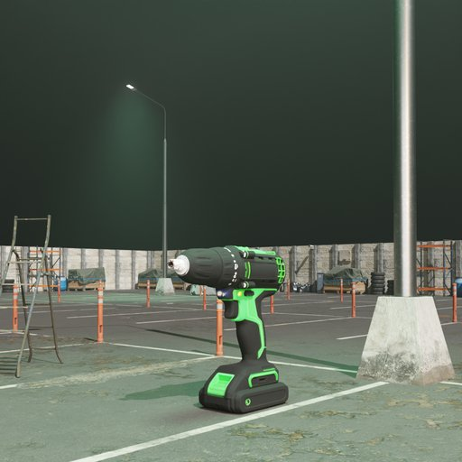
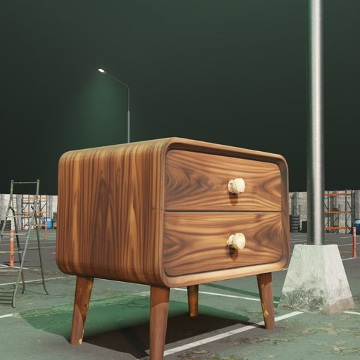
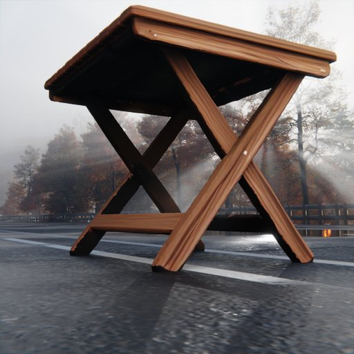
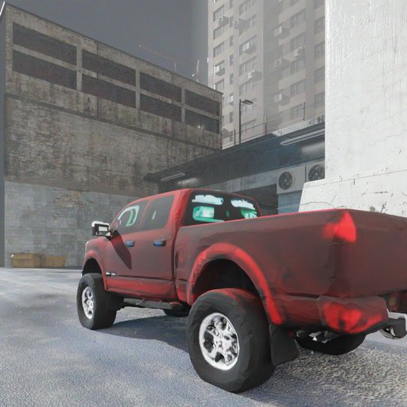
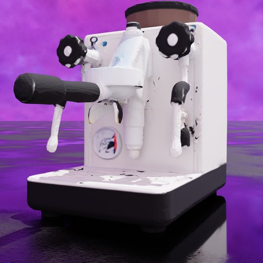
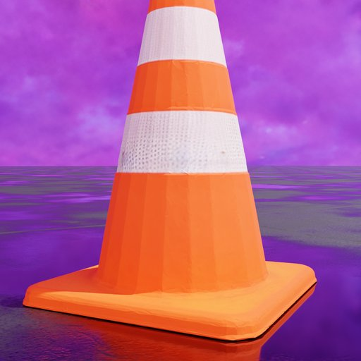
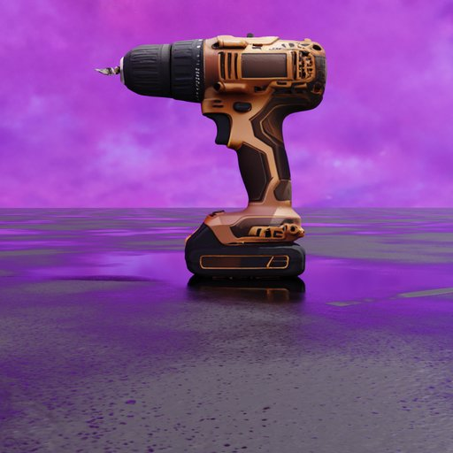
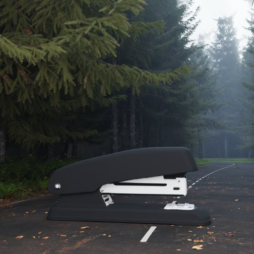
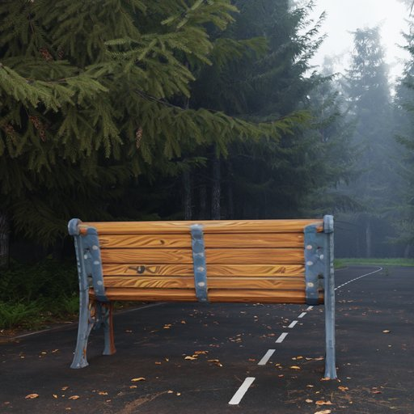
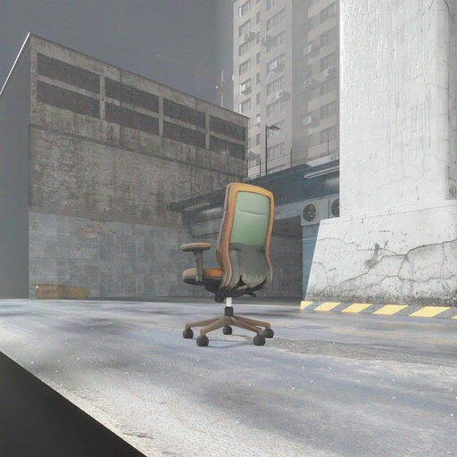

Gallery
Scene-Aware Rendering Showcase
Best VLM-gated renders across 7 diverse Blender scenes. Each object is automatically placed, lit, and iteratively refined by goal-driven loop agents.

Indoor (4.blend)
Cordless Screwdriver

Indoor (4.blend)
Nightstand

Indoor (4.blend)
Folding Table

Indoor (4.blend)
Pickup Truck

Desert Highway
Toaster Oven

Desert Highway
Table Lamp
Coastal Bridge
Park Bench
Coastal Bridge
Parking Meter

Coastal Bridge
Sledgehammer

Coastal Bridge
Rocking Chair

Industrial Yard
Retro Telephone

Industrial Yard
Concrete Barrier

Neon Wetland
Espresso Machine

Neon Wetland
Traffic Cone

Neon Wetland
Electric Drill

Neon Wetland
Cement Mixer Truck

Misty Forest
Desk Stapler

Misty Forest
Ceramic Teapot

Misty Forest
Street Bench

Urban Concrete
Rolling Office Chair

Urban Concrete
Sewing Machine